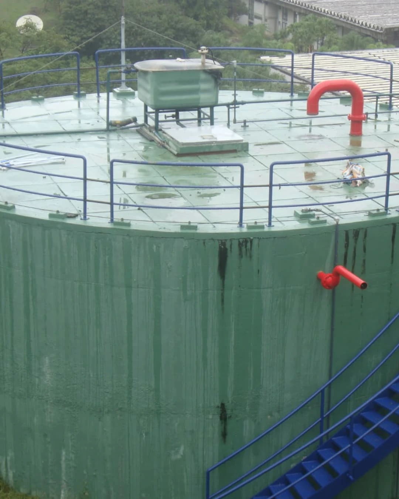
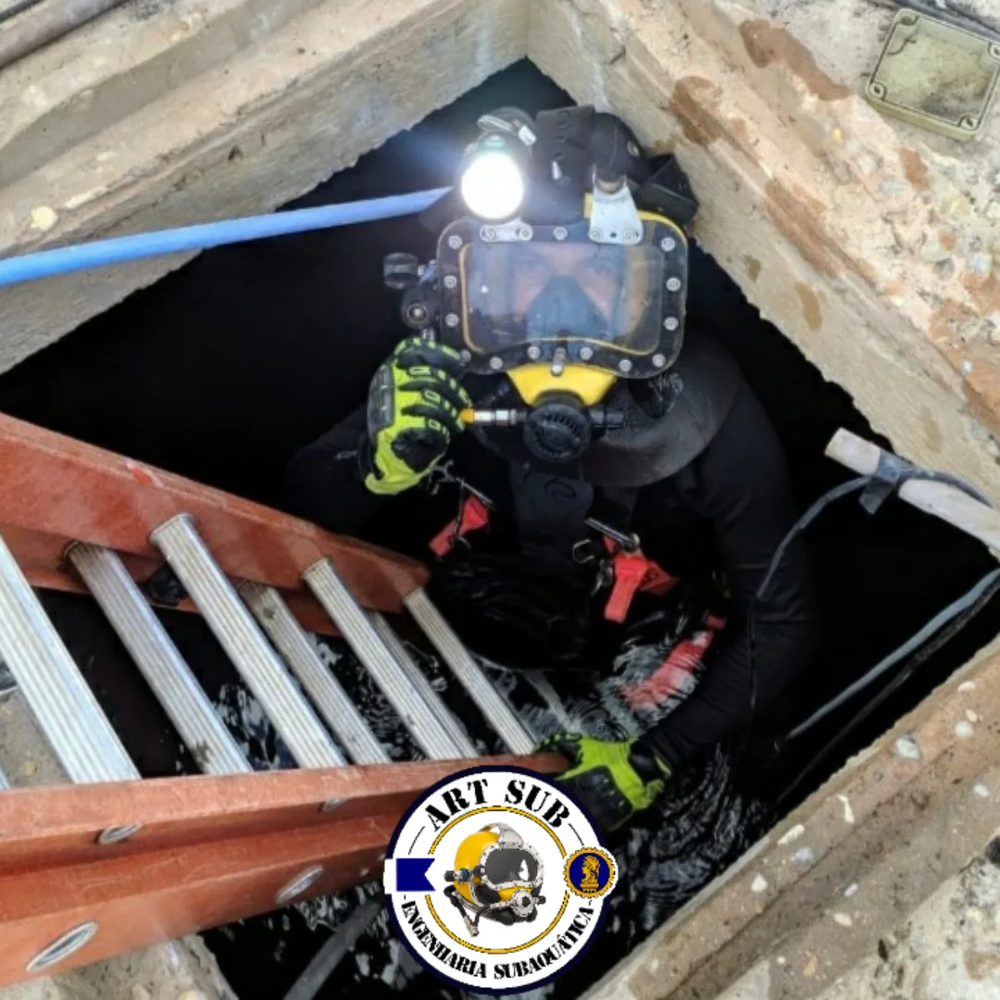
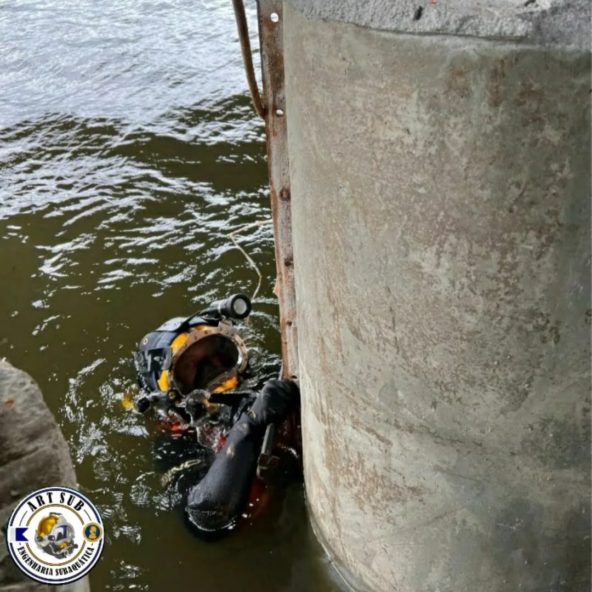
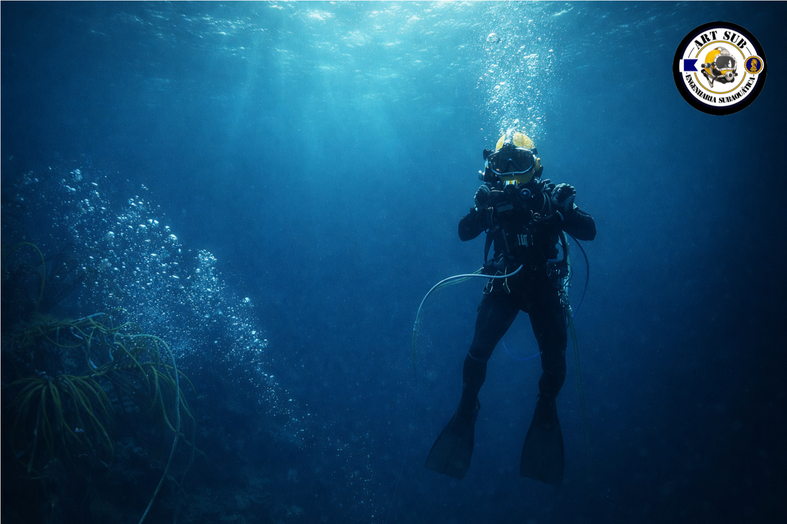

A Art Sub une o rigor da Engenharia Civil com a expertise do Mergulho Comercial para realizar limpezas técnicas e inspeções em reservatórios ativos.
Solicitar Orçamento TécnicoEngenharia Civil e tecnologia subaquática para garantir a continuidade operacional. Clique nas imagens para ampliar.

Manutenção via sucção subaquática preservando a potabilidade e o abastecimento de hospitais e indústrias.

Diagnóstico estrutural completo com laudos técnicos e registro em alta definição de fissuras e corrosão.

Reparos em pontes, cais e estruturas portuárias com planejamento de engenharia civil e concretagem submersa.
Na ART SUB, unimos duas áreas que caminham lado a lado com precisão: o conhecimento técnico de engenharia e a prática do mergulho profissional.
Nossa equipe é composta por engenheiros civis especializados e mergulhadores treinados para atuar em ambientes extremos, garantindo eficiência e respeito ao meio ambiente.
Preservação total da água potável.
Certificações NR-33 e NR-35.

Tudo o que você precisa saber sobre manutenção subaquática.
Sim. A ART SUB Engenharia Subaquática realiza inspeções, limpeza e reparos em reservatórios de água sem necessidade de esvaziamento. Utilizamos mergulhadores profissionais equipados com sistema de ar independente e técnicas de engenharia subaquática.
Não. O mergulhador utiliza roupa hermética, máscara facial integral e sistema de ar independente, evitando qualquer contato direto com a água. Equipamentos são higienizados com solução sanitizante antes da operação.
Inspeções visuais e fotográficas, limpeza subaquática, identificação de fissuras, reparos estruturais, tamponamento de vazamentos, manutenção de válvulas e recuperação de estruturas submersas.
Evita corrosão, fissuras estruturais e acúmulo de impurezas que comprometem a qualidade da água e a integridade do reservatório, aumentando a vida útil da estrutura e reduzindo custos emergenciais.
Reservatórios metálicos, de concreto, caixas d'água industriais, tanques de armazenamento e outras estruturas hidráulicas operacionais.
Condomínios residenciais, indústrias, hospitais, escolas, empresas de saneamento, órgãos públicos, prefeituras e grandes empreendimentos.
Sim. Oferecemos atendimento emergencial 24 horas para situações críticas como vazamentos e danos estruturais que precisam de intervenção imediata.
Sim. Oferecemos contratos anuais de manutenção preventiva, que permitem inspeções periódicas, planejamento técnico e redução de riscos a longo prazo.
Inspeções estruturais, recuperação de fundações, corte e soldagem subaquática, concretagem submersa e montagem de estruturas metálicas.
Atendemos principalmente a região Sudeste do Brasil. Outras regiões podem ser atendidas sob consulta, dependendo da demanda do projeto.
Sediada em Jacareí, a Art Sub possui logística ágil para atender com excelência o Vale do Paraíba, Litoral e Rio de Janeiro.
12 99800-5945
contato@artsubengenharia.com.br
Jacareí - SP